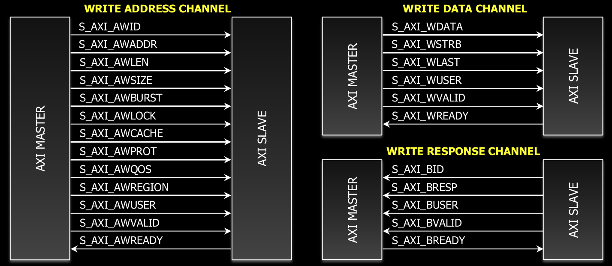
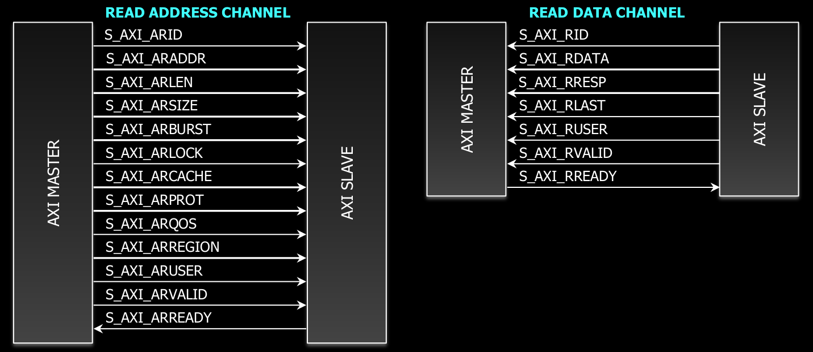
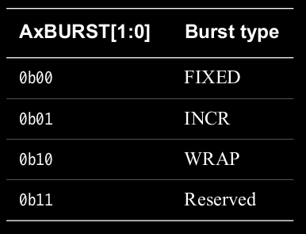
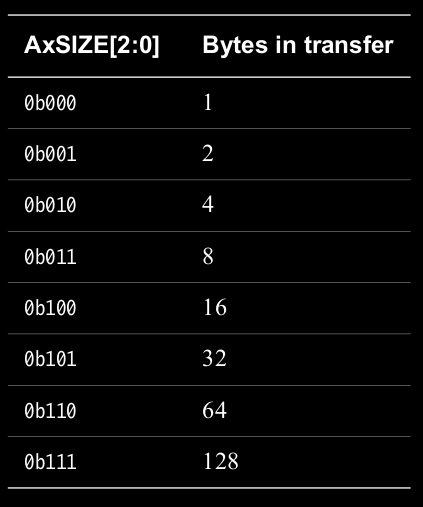
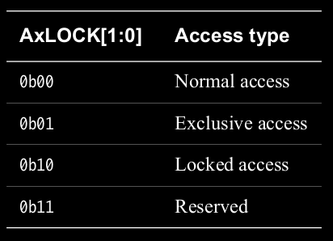
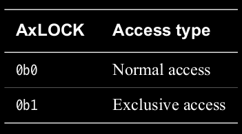
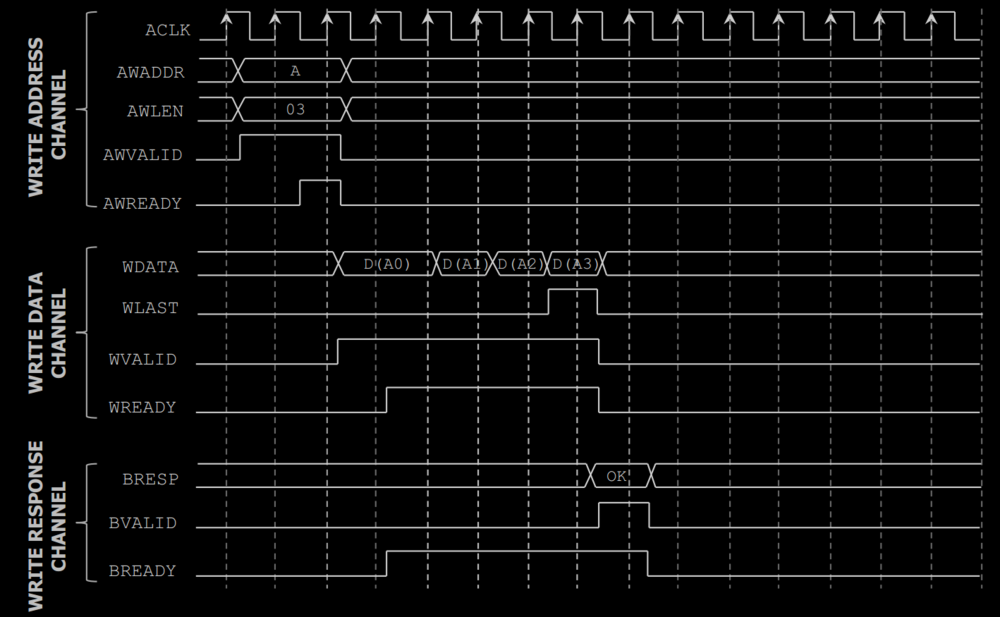

AXI与APB，AHB很大的一个区别就是将各信号分组，并将分组信号分为了WRITE ADDR，WRITE DATA，WRITE RESP，READ ADDR，READ DATA五个通道。相应的信号数量也较APB，APB增多不少。
1. globals signals
- ACLK. 时钟信号，没什么特别的。
- ARESETn. 低电平触发的复位信号，没什么特别的。
2. read/wtite channels overview
2.1 write channels
与写操作相关的有三个通道，如下图:

除去前缀名”S_AXI_“，后面的名字就是信号名。各个通道之间相互独立。以WRITE ADDRESS CHANNEL为例，有的信号从名字上便可以推断出其大致功能与APB，AHB中相应名字的信号功能类似，如AWADDR，AWBUTST，AWSIZE，AWPROT。
2.2 read channels
与读操作相关的有两个通道，如下图:

各通道之间相互独立。读操作没有专门的回应通道，因为读操作本身就是需要回应的，所以可以看到read data channel本身就融合了一系列的回应信号。
3. * address channels
write/read address channel信号有很大的相似性，所以这里结合起来说明。
A*VALID和A*READY. 这两个信号是通信时的握手信号，当A*VALID=1 && A*READY=1时，握手成功，当前周期所提供的数据及指令会被读入且执行。A*VALID由master发出，A*READY由slave发出，发送时机相互独立。
这个简单的握手机制也是AXI和APB，AHB的主要区别之一。APB和AHB中，采用双阶段信息传递的方式来等待slave的反馈，master侧并不提供类似VALID的使有效信号，任何在传输阶段的指令，在有效周期(如不在busy时)，都会被识别。并由slave单侧的READY信号来作为结束。AXI采用的握手机制相当于在master侧和slave侧各执一个待握手信号，在双方同时表示同意时握手完成。
A*VALID由master随着访问地址发出，指明当前发出地址的有效性。
A*READY由slave发出，指明当前slave的状态，是否处于可接收状态。A*ADDR. 地址信号，没什么特别的。
A*BURST，A*SIZE，A*LEN. 这三个信号是突发模式相关的信号。与AHB不同的是，AXI不像AHB一样将突发的长度与模式一起编码到HBURST信号里，而是分为两个信号A*BURST与A*LEN，A*BURST负责具体的突发模式，A*LEN负责具体的突发长度，其beat个数，长度为A*LEN+1。A*SIZE和AHB中的HSIZE类似，就是beat所含的字节数。具体参考下图。


突发模式中有几点需要注意:
- 一次突发中的地址不能跨越以4KB为倍数的地址。
- 突发不能提前结束或中断，必须发完。如果有多余数据，可以借助写通道中的WSTRB来盖掉不需要的数据。
- 回卷模式中，突发长度必须是2,4,6,8,16。
- A*ID，标示符信号，表示当前周期的信息来源，没什么太特别的地方。有一点要注意的是在AXI4中，原AXI3中的WID以及其配套的交错数据传输模式被移除，AXI4只支持顺序传输。
- A*LOCK. 这个信号用于表明lock模式，但除了其中一个locked access模式外，其他的不是很类似AHB中的HMASTLOCK。这个A*LOCK更像是一个后门访问或者说类似于简单地址DMA访问的概念信号。AXI3和AXI4中，A*LOCK有很大区别，AXI3中要求必须对A*LOCK实现的功能，由于其实现起来的复杂性和较少的实用性，在AXI4中被移除。具体可以看下表。


Locked access类似于AHB中的HMASTLOCK，起一个互斥锁的作用。
Normal access是正常的读写访问模式。
Exclusive access是类似于后门的一种访问方式，通过设定A*LOCK=Exclusive access来开辟一个专有的读写访问机会。
- A*PROT. 类似APB，AHB中的PROT信号。
- A*CACHE. 这个信号一般是在AXI用于与cache类型的器件桥接时，类似于一个cache控制器和cache间传递信号，指明了cache在miss和hit情况下的update policy，如Write-through No-allocate，Write-through Read-allocate等等。
- A*QOS. 这个信号是AXI4才引入的扩展信号。用于在指示多个信息传递时的优先级。QOS值越大的优先级越高，越应该先被处理。
- A*REGION. 这个信号是AXI4才引入的扩展信号。类似于AHB中的decoder。AHB中专门实现了一个decoder来进行高位解码，在AXI4中，在master和slave中内部实现并用A*REGION信号来指示。
- A*USER. 这个信号是AXI4才引入的扩展信号。此信号是用户自定义信号，可以在通信时用于添加一些附加信息。但官方文档并没有给出严格的定义，也不推荐使用，可以将此信号看做是保留信号。
4. * data channels
write/read data channel同样有很大的相似性，这里一起说明。
data channel的大多数信号都很直观，如*DATA，*VALID，*READY，*STRB(类比APB中的PSTRB)，需要略作解释的是剩下的*LAST和*USER。
- *LAST. 此信号用于指明当前周期的数据为BURST中最后一个数据。
- *USER. 此信号和address channel的USER信号一样，在AXI4中加入，不推荐使用。
5. write response channel
在write response channel中，只有BRESP信号是此通道特有的，功能与AHB中的HRESP类似。用于反馈信息传输是否正确。
值得注意的一点，在write response channel中，主机是write address/data channel中的从机。这也就要求write response channel的任何操作都必须要在write address/data channel完成之后进行。比如BVALID，BRESP必须要等待WLAST。
这里看一个例子，帮助理解

6. handshake tips
握手机制在3.已经说过，这里附加地解释一下。
VALID和READY两个信号在发送阶段是相互独立的。VALID是主机侧“发送信息已准备就绪”的指示信号，一旦发出没有被接收，在不重启的情况下就不能被主动打断。READY是从机侧的实时状态指示信号，可以随从机状态而定。文档建议默认READY复位为1, 以省去由0->1的一个多余的转换周期(前提是实现此AXI的模块支持在一个周期内读取信息)。任何时钟上升沿，只要采样到两信号同时为1, 无论发送时间是什么时候，都会被识别为握手成功。文档中强调，VALID不应因未看到READY时进行等待，造成在该将VALID置位时不去置位。其实考虑到相信号的相互独立，这里就不用太在意。
7. multiple transactions and out-of-order
由于AXI有*ID这个信号，相当于给每个信息传输都加上了一个快递的分组标签。组内的货物要按顺序接收，不同组的可以乱序接收。
7.1 general view of a transfer
这里可以想象一下一次传输是如何进行的。以3个和写操作相关的通道为例，首先动作的应该是address channel，master在一个相对短的时段内发出了一个访问指令并被slave识别。接着由于data channel和address channel互相独立，master的写数据随时会放到总线上去，具体时间未知也不是很在意，总之在接下来的某一时间点数据被发送到data channel上并进行传输。这个传输的过程可能会很长也可能很短，取决于数据量的大小。response channel此时等待当前的数据传输结束以发送回应信号。我们可以记这个数据传输的时间段为TD1。
7.2 normal/out-of-order during transfer
由于各通道之间的独立性，TD1进行过程中，address channel可能会再次发送指令，这个指令的发送和接收使用的是address channel上的握手信号，与data channel无关。那么这个新指令就在接下来的任意时刻被接收到，同时data channel正在执行TD1中的数据传输而被占据着，所以新指令的数据传输会暂时被滞后，所以在模块设计中必须实现一个指令信息的存储机制。如果在TD1期间，还有新指令，那么就会一个接一个地存起来。
这其实就是一个类似pipeline的机制，指令的发布和执行被层级分割，从而会引入一个乱序的问题。在上面的例子中，假如我们存了3个传输指令，A1, A2, A3，第一个指令A1对应的数据传输D1完，我们有两个选择:
- 按步就班地按照指令顺序发送D2, D3, 只是由于通道的独立性和数据量的不同，指令接收的结束时间和数据接收结束的时间不同。这里称作normal transfer，有的地方称这个现象为outstanding，用于表示对应指令和数据结束时间的不同。
- 乱序发送，先发D3, 再发D2, 称作out-of-order transfer。这就要求提供信息让slave知道接下来发送的信息是归属于A3而不是A2的。*ID这个信号就是在这里发挥作用，slave会看到当前通道中显示的*ID这个分组标签来判别当前数据是哪个指令的。否则会默认接下来的数据是根据指令顺序发送，就会出错。可以想象，如果没有*ID这个分组标签，这个功能是无法实现的。
这其实带来一个困扰，在硬件实现时，master不知道slave到底支持不支持乱序功能。所以在AXI4中，WID在write data channel里被去除，就禁止了这样乱序的发送，而默认数据要走normal transfer那条路。在读相关的通道里，*ID信号还在，所以仍有乱序的可能。
8. 察看信号步骤小结
总体来说，察看波形图时可以大致按照如下步骤:
- 按照address -> data -> response channel的顺序察看
- 在address channel中察看ID，LOCK和BURST相关信号来确定当前发布的指令是什么
- 等待address channel中的握手
- 对于data channel，察看WSTRB(如果是write data channel)，察看LAST信号确定当前信息的结束点
- 等待data channel中的握手
- 对于response channel，察看ID((若是写操作))，察看data channel的LAST信号，察看BRESP信号
- 等待等待response channel中的握手